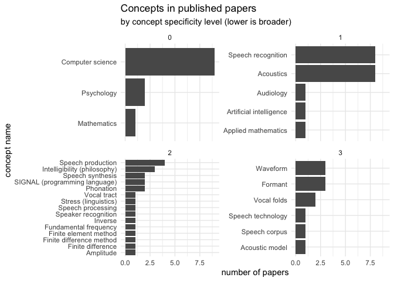
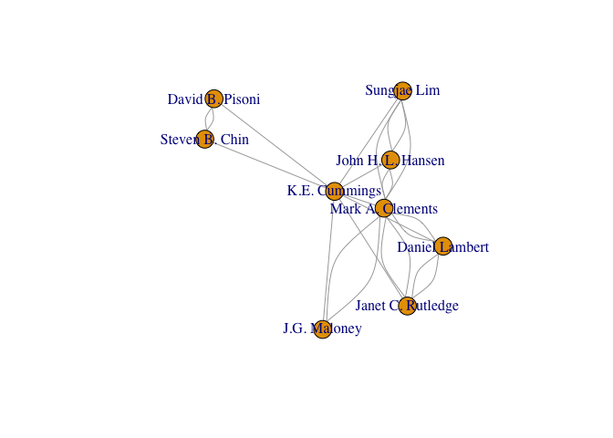

The goal of openalexR is to create an R wrapper for the Open Alex API (https://openalex.org) which allows users to query and extract results from the Open Alex database of academic research output. Open Alex succeeds the Microsoft Academic Graph in maintaining an extensive relational database. The API has 5 endpoints to query: (1) Works (journal & conference papers, books, data, etc); (2) Authors; (3) Venues; (4) Institutions; and (5) Concepts. More information about each of these endpoints can be found here: (https://docs.openalex.org).
The API is completely free, open source, and has no rate limits. If you prefer, you can also request a snapshot of all of the data to be copied into an amazon s3 bucket (https://docs.openalex.org/download-snapshot).
openalexR has functions to request data from each of the five endpoints: get_works, get_authors, get_venues, get_institutions, and get_concepts. It also has some wrapper functions for specific needs (get_authors_papers, get_coauthors).
Installation
You can install the development version of openalexR from GitHub with:
# install.packages("devtools")
devtools::install_github("ekmaloney/openalexR")Find Works
The find_works function takes three main parameters: (1) ID type, one of: doi, open_alex, mag (Microsoft Academic Graph), pmid (Pubmed Identifier), pmcid (Pubmed Central Identifier) (2) Id(s), can either be 1 id or a list of ids. (3) Variable_unnest (optional) - a variable by which you would like to make the dataframe longer (can be: authorships, concepts, referenced_works, related_works, and citation_counts_year)
For example, if I wanted to look up the paper “Analysis of the glottal excitation of emotionally styled and stressed speech” by Kathleen E. Cummings (my mom!) and Mark A. Clements, I can use the doi (https://doi.org/10.1121/1.413664) to do so as shown below:
library(openalexR)
library(tidyverse)
#> ── Attaching packages ─────────────────────────────────────── tidyverse 1.3.1 ──
#> ✓ ggplot2 3.3.5 ✓ purrr 0.3.4
#> ✓ tibble 3.1.6 ✓ dplyr 1.0.7
#> ✓ tidyr 1.1.4 ✓ stringr 1.4.0
#> ✓ readr 2.1.1 ✓ forcats 0.5.1
#> ── Conflicts ────────────────────────────────────────── tidyverse_conflicts() ──
#> x dplyr::filter() masks stats::filter()
#> x dplyr::lag() masks stats::lag()
paper_info <- find_work(id_type = "doi",
id = "https://doi.org/10.1121/1.413664",
variable_unnest = "authors")
glimpse(paper_info)
#> Rows: 2
#> Columns: 19
#> $ id <chr> "https://openalex.org/W2062207950", "https://open…
#> $ title <chr> "Analysis of the glottal excitation of emotionall…
#> $ publication_date <chr> "1995-07-01", "1995-07-01"
#> $ openalexid <chr> "https://openalex.org/W2062207950", "https://open…
#> $ doi <chr> "https://doi.org/10.1121/1.413664", "https://doi.…
#> $ pmid <chr> "https://pubmed.ncbi.nlm.nih.gov/7608410", "https…
#> $ mag <int> 2062207950, 2062207950
#> $ host_venue_info <list> [<tbl_df[3 x 7]>], [<tbl_df[3 x 7]>]
#> $ works_type <chr> "journal-article", "journal-article"
#> $ open_access <lgl> FALSE, FALSE
#> $ open_access_status <chr> "closed", "closed"
#> $ authors_id <chr> "https://openalex.org/A2109682146", "https://open…
#> $ authors_name <chr> "K.E. Cummings", "Mark A. Clements"
#> $ authors_orcid <lgl> NA, NA
#> $ citation_count <int> 97, 97
#> $ concepts <list> [<data.frame[7 x 5]>], [<data.frame[7 x 5]>]
#> $ referenced_works <list> [], []
#> $ related_works <list> <"https://openalex.org/W2109138290", "https://ope…
#> $ citation_counts_year <list> [<data.frame[10 x 2]>], [<data.frame[10 x 2]>]This function returns a tibble with some nested columns. I decided to unnest the authorships column, so I can extract the openalex id for Kathleen E. Cummings to use to retrieve all of her published work (get_authors_papers) and her coauthorship network (get_coauthors).
The get_authors_papers() function works similarly to find_work - you need to indicate what type of id you are supplying and the id itself. Here I use the openalex id I got from the previous result.
#get the openalex id
mom_oa_id <- paper_info$authors_id[1]
#get all papers she published
all_papers <- get_authors_papers(id_type = "openalex",
id = mom_oa_id)
glimpse(all_papers)
#> Rows: 10
#> Columns: 29
#> $ id <chr> "https://openalex.org/W2050783745", "https://ope…
#> $ doi <chr> "https://doi.org/10.1121/1.415167", "https://doi…
#> $ mag <chr> "2050783745", "2062207950", "1590551706", "20587…
#> $ openalex <chr> "https://openalex.org/W2050783745", "https://ope…
#> $ pmid <chr> NA, "https://pubmed.ncbi.nlm.nih.gov/7608410", N…
#> $ title <chr> "Analysis of the glottal excitation of intoxicat…
#> $ publication_date <chr> "1996-04-01", "1995-07-01", "1995-05-09", "1994-…
#> $ relevance_score <lgl> NA, NA, NA, NA, NA, NA, NA, NA, NA, NA
#> $ host_venue_id <chr> "https://openalex.org/V11296630", "https://opena…
#> $ host_venue_name <chr> "Journal of the Acoustical Society of America", …
#> $ host_venue_publisher <chr> "Acoustical Society of America", "Acoustical Soc…
#> $ host_venue_issn <list> <"1520-8524", "0001-4966", "1520-9024">, <"1520-…
#> $ host_venue_iss_l <chr> "0001-4966", "0001-4966", NA, "0001-4966", "000…
#> $ host_venue_type <chr> "publisher", "publisher", "publisher", "publishe…
#> $ host_venue_url <chr> "https://doi.org/10.1121/1.415167", "https://doi…
#> $ host_venue_oa <lgl> FALSE, FALSE, FALSE, FALSE, FALSE, FALSE, FALSE,…
#> $ host_venue_version <lgl> NA, NA, NA, NA, NA, NA, NA, NA, NA, NA
#> $ host_venue_license <lgl> NA, NA, NA, NA, NA, NA, NA, NA, NA, NA
#> $ authorships <list> [<data.frame[3 x 4]>], [<data.frame[2 x 4]>], [<…
#> $ concepts <list> [<data.frame[8 x 5]>], [<data.frame[7 x 5]>], [<…
#> $ alternate_host_venues <list> [], [], [], [], [], [], [], [], [], []
#> $ cited_by_count <int> 0, 97, 3, 0, 2, 16, 13, 0, 33, 7
#> $ publication_year <int> 1996, 1995, 1995, 1994, 1994, 1993, 1992, 1991, …
#> $ cited_by_url <chr> "https://api.openalex.org/works?filter=cites:W2…
#> $ type <chr> "journal-article", "journal-article", "proceedi…
#> $ paratext <lgl> FALSE, FALSE, FALSE, FALSE, FALSE, FALSE, FALSE…
#> $ retracted <lgl> FALSE, FALSE, FALSE, FALSE, FALSE, FALSE, FALSE,…
#> $ referenced_works <list> <>, <>, <"https://openalex.org/W2051535326", "ht…
#> $ related_works <list> <"https://openalex.org/W1994886694", "https://op…You can explore these results – here I look at the distribution of concepts across her published work.
all_papers %>%
unnest(concepts, names_sep = "_") %>%
group_by(concepts_display_name, concepts_level) %>%
summarise(count = n()) %>%
ggplot(mapping = aes(x = reorder(concepts_display_name, count), y = count)) +
geom_col() + coord_flip() + facet_wrap(~concepts_level, scales = "free_y") +
theme_minimal() + labs(title = "Concepts in published papers",
subtitle = "by concept specificity level (lower is broader)",
x = "concept name", y = "number of papers")
#> `summarise()` has grouped output by 'concepts_display_name'. You can override
#> using the `.groups` argument.
Finally, you can also use the get_coauthors() function to collect the coauthorship network of the specified author of choice.
kate_direct_coauthors <- get_coauthors(id_type = "openalex",
id = mom_oa_id)
#> Joining, by = "ego_author"
coauthors_tibble <- get_coauthors(id_type = "openalex",
id = unique(kate_direct_coauthors$alter_author))
#> Joining, by = "ego_author"
only_ego_net <- coauthors_tibble %>% filter(alter_author %in% kate_direct_coauthors$alter_author)
all_connections <- bind_rows(kate_direct_coauthors, only_ego_net) %>%
dplyr::mutate(ego_first = paste(ego_author_name, alter_author_name, sep = "_"),
alter_first = paste(alter_author_name, alter_author_name, sep = "_")) %>%
tidyr::pivot_longer(ego_first:alter_first,
names_to = "order",
values_to = "tie") %>%
dplyr::select(paper_id, tie) %>%
dplyr::distinct() %>% separate(tie, into = c("ego_author",
"alter_author"), sep = "_") %>%
filter(ego_author != alter_author) %>%
group_by(ego_author, alter_author) %>%
summarise(weight = n())
#> `summarise()` has grouped output by 'ego_author'. You can override using the
#> `.groups` argument.
library(igraph)
#>
#> Attaching package: 'igraph'
#>
#> The following objects are masked from 'package:dplyr':
#>
#> as_data_frame, groups, union
#>
#> The following objects are masked from 'package:purrr':
#>
#> compose, simplify
#>
#> The following object is masked from 'package:tidyr':
#>
#> crossing
#>
#> The following object is masked from 'package:tibble':
#>
#> as_data_frame
#>
#> The following objects are masked from 'package:stats':
#>
#> decompose, spectrum
#>
#> The following object is masked from 'package:base':
#>
#> union
network <- graph_from_data_frame(all_connections, directed = FALSE)
plot(network)